長期トレンド
JKMとJEPXシステムプライスの推移グラフ
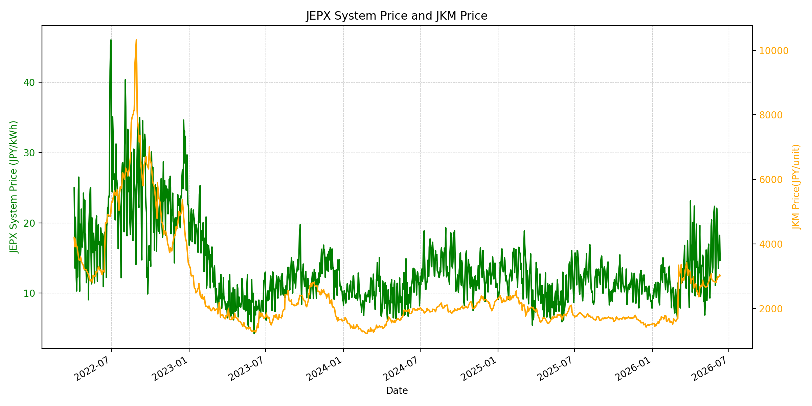
WTIの推移グラフ
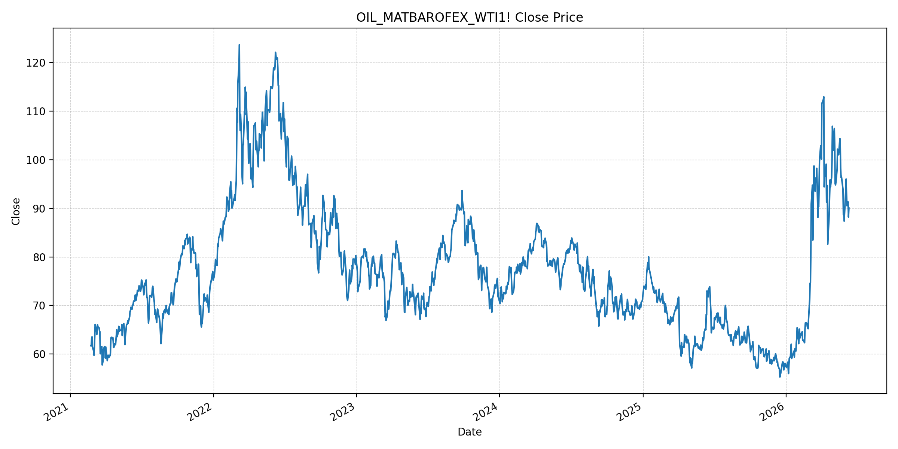
JEPXエリアプライスグラフ（直近一年分）
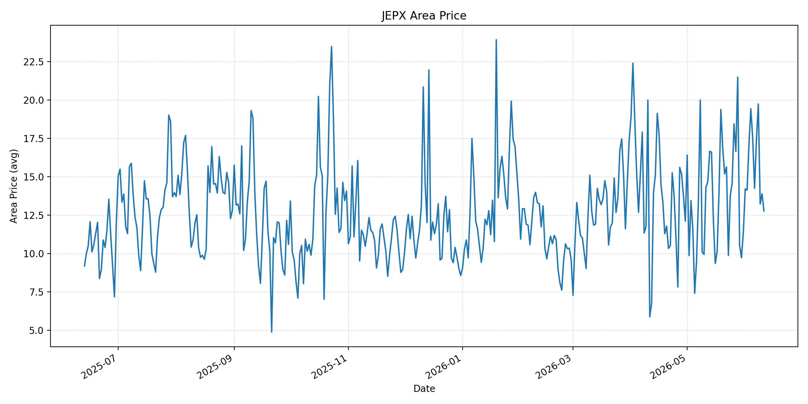
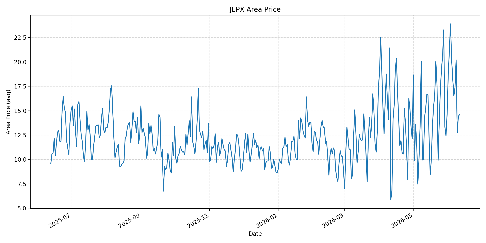
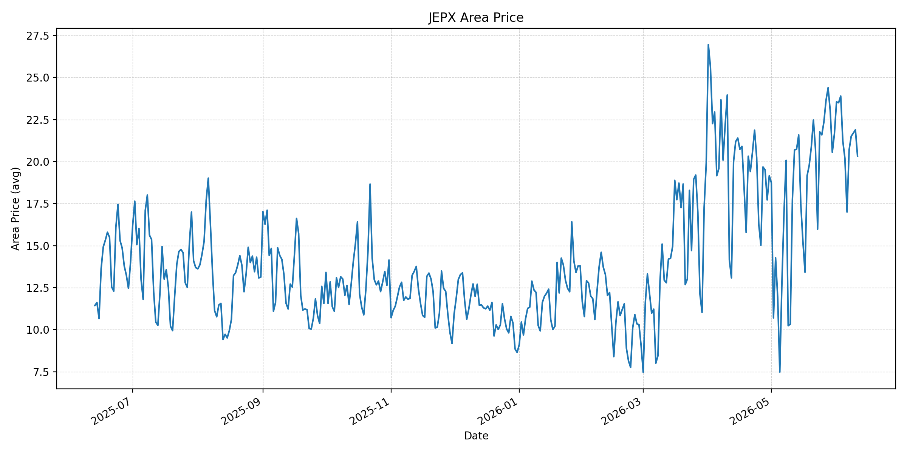
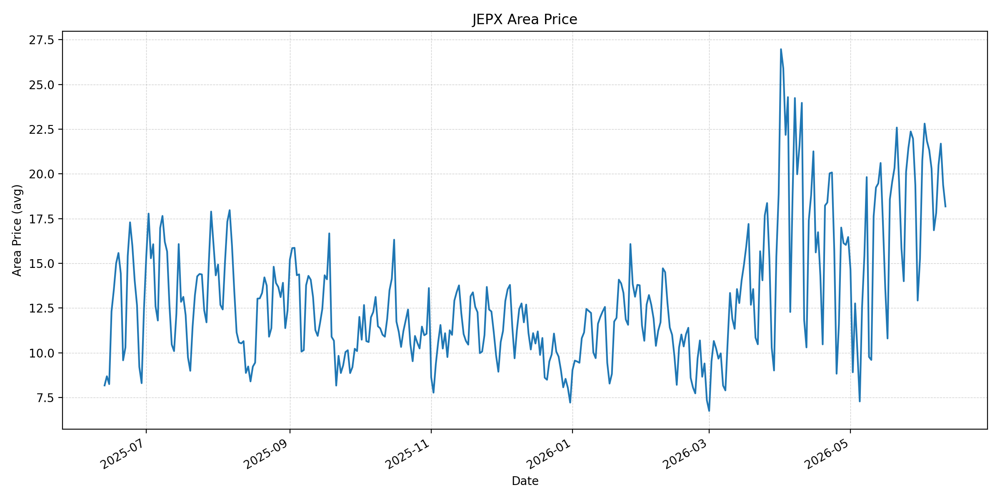
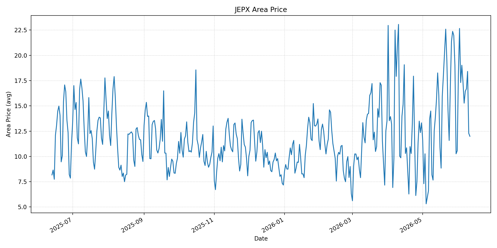
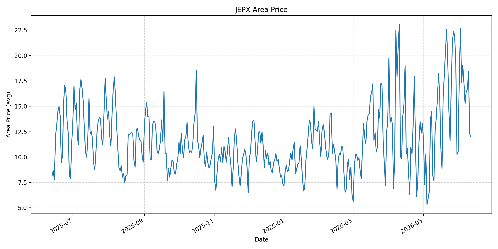
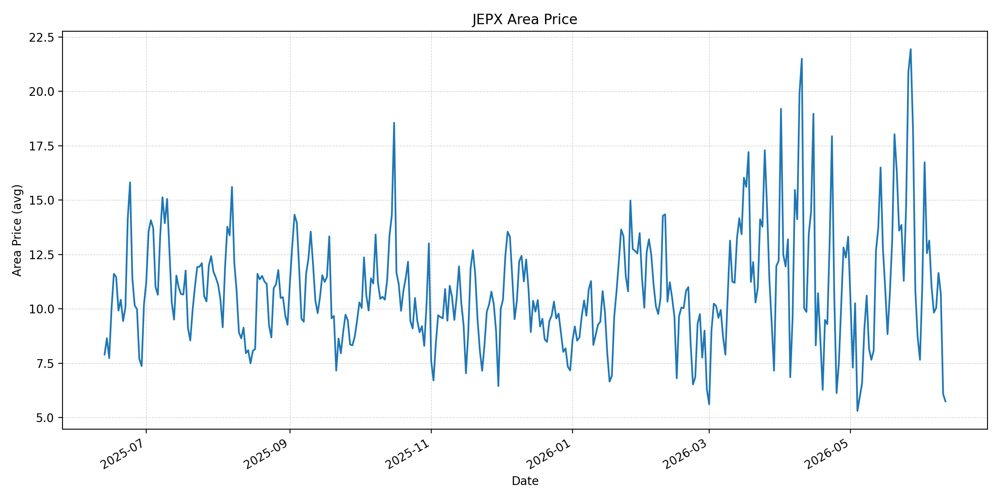
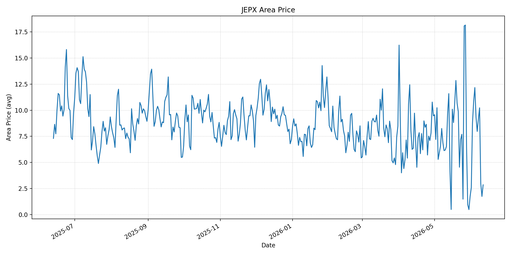
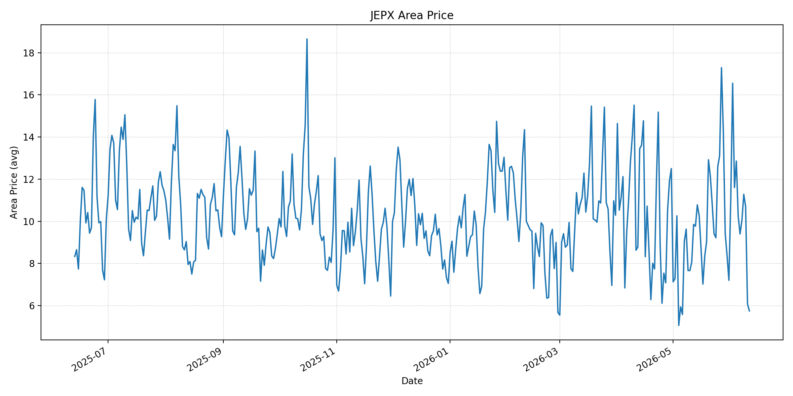
短期トレンド
JKMとJEPXシステムプライスの推移グラフ
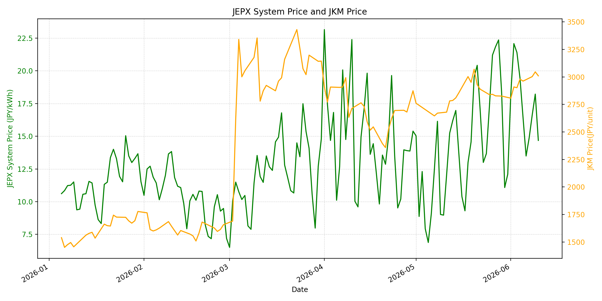
WTIの推移グラフ
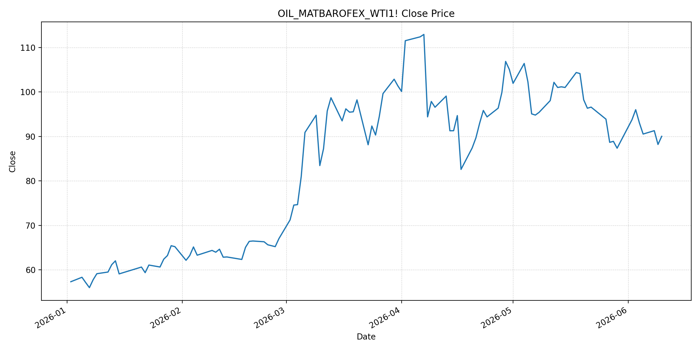
JEPXシステムプライス
JEPXは受渡日ベースの最新非空値で評価しています。最新値は 2026-06-11 分です。先週終値は 2026-06-04 時点の直近値、先月終値は 2026-05-31 時点の直近値で評価しています。
| エリア | 当日価格 | 前日価格 | 前日比（％） | 先週終値 | 先週比（％） | 先月終値 | 先月比（％） | 過去最高値 | 最高値比（％） |
|---|---|---|---|---|---|---|---|---|---|
| システム | 13.79 | 14.68 | -6.06 | 19.45 | -29.10 | 12.10 | 13.97 | 64.06 | -78.47 |
| 北海道 | 12.77 | 13.89 | -8.06 | 19.42 | -34.24 | 11.38 | 12.21 | 73.92 | -82.72 |
| 東北 | 14.59 | 14.42 | 1.18 | 20.26 | -27.99 | 14.64 | -0.34 | 84.92 | -82.82 |
| 東京 | 20.32 | 21.89 | -7.17 | 21.22 | -4.24 | 21.65 | -6.14 | 86.13 | -76.41 |
| 中部 | 18.18 | 19.38 | -6.19 | 21.33 | -14.77 | 15.25 | 19.21 | 52.06 | -65.08 |
| 北陸 | 11.99 | 12.29 | -2.44 | 19.02 | -36.96 | 10.56 | 13.54 | 46.48 | -74.21 |
| 関西 | 11.99 | 12.29 | -2.44 | 19.02 | -36.96 | 10.56 | 13.54 | 46.48 | -74.21 |
| 中国 | 5.75 | 6.08 | -5.43 | 13.14 | -56.24 | 7.66 | -24.93 | 46.48 | -87.63 |
| 四国 | 2.85 | 1.74 | 63.79 | 12.17 | -76.58 | 1.74 | 63.79 | 46.48 | -93.87 |
| 九州 | 5.75 | 6.08 | -5.43 | 12.86 | -55.29 | 7.20 | -20.14 | 40.54 | -85.82 |
LNG先物価格
最新値は 2026-06-10 の LNG(close) です。先週終値は 2026-06-03 時点の直近値、先月終値は 2026-05-29 時点の直近値で評価しています。
| 当日価格 | 前日価格 | 前日比（％） | 先週終値 | 先週比（％） | 先月終値 | 先月比（％） | 過去最高値 | 最高値比（％） |
|---|---|---|---|---|---|---|---|---|
| 3010.00 | 3046.00 | -1.18 | 2902.00 | 3.72 | 2826.00 | 6.51 | 10319.00 | -70.83 |
石油先物価格
最新値は 2026-06-10 の OIL(close) です。先週終値は 2026-06-03 時点の直近値、先月終値は 2026-05-29 時点の直近値で評価しています。
| 当日価格 | 前日価格 | 前日比（％） | 先週終値 | 先週比（％） | 先月終値 | 先月比（％） | 過去最高値 | 最高値比（％） |
|---|---|---|---|---|---|---|---|---|
| 90.03 | 88.20 | 2.07 | 96.02 | -6.24 | 87.36 | 3.06 | 123.70 | -27.22 |
ニュース
イラン情勢に関するニュース
- 2026年6月10日、APは、米軍が2日連続でイランの複数標的を攻撃したと報じました。米国は継続するイラン側の攻撃への対応と説明し、イランはバーレーン、クウェート、ヨルダンの米軍関連拠点を攻撃したとされ、停戦は崩壊に近い状態です。 参照: AP, 2026-06-10
- 2026年6月10日、Guardianも、米国の2日連続攻撃とイランの反撃により、中東和平協議がさらに不安定化したと報じました。制裁、凍結資産、核開発制限、ホルムズ海峡の管理をめぐる隔たりは残っています。 参照: The Guardian, 2026-06-10
ホルムズ海峡経由の石油・LNGに関するニュース
- 2026年6月10日、APは、今回の緊張再燃で原油価格が93ドル超に押し上げられたと報じました。米国はホルムズ海峡周辺のイラン防空、地上管制、監視レーダーを攻撃しており、海上交通と保険料のリスクは残っています。 参照: AP, 2026-06-10
- 一方、Barron'sは2026年6月10日、Brentが91.64ドル、WTIが88.37ドルへ小幅上昇にとどまったと報じました。市場は、攻撃が限定的で、ホルムズ再開時に滞留供給が放出される可能性を意識しており、地政学ニュースへの反応は鈍化しています。 参照: Barron's, 2026-06-10
ホルムズ海峡経由でない石油・LNGに関するニュース
- 過去24時間で、日本向けの非ホルムズ新規大型調達に関する強い追加報道は確認できませんでした。直近ではKplerが、日本の2026年LNG需要見通しを64.9百万トンへ0.6百万トン引き上げ、Q2からQ3に8から10カーゴの追加需要を見込むと分析しています。 参照: Kpler, 2026年5月
- JOGMECの2026年6月8日掲載の週次では、6月1日から5日の北東アジアJKMは前週末の18ドル前半から6月5日に18ドル後半へ上昇し、米イラン和平協議停止、豪州ストライキ、天候要因が上昇材料になったと整理されています。 参照: JOGMEC, 2026-06-08
日本国内のイラン戦争に関係するニュース
- 過去24時間で、JEPX制度や国内電力市場制度を直接変更する新規の強い発表は確認できませんでした。直近の国内対策として、経済産業省は2026年5月20日に、今夏は全エリアで最低限必要な予備率3%を確保できるため節電要請は実施しないと発表しています。 参照: 経済産業省, 2026-05-20
- 同発表では、国際情勢の変化、異常気象、発電所の休廃止、火力発電所の地域集中などにより、電力需給は予断を許さないとも説明されています。国内供給力の余力は確保されていても、燃料価格の上振れは卸市場へ波及し得ます。 参照: 経済産業省, 2026-05-20
インサイト
ニュース事項による日本の電力市場への影響（短期：数日〜1週間）
- JEPXシステムプライスは 13.79 円/kWhで前日比 -6.06%、先週比 -29.10% と低下しました。中国 5.75、九州 5.75、四国 2.85 が低い一方、東京は 20.32 と20円台を維持しており、全国平均だけで需給を判断しにくい状況です。
- OILは 90.03 と前日比 2.07% ですが、先週比は -6.24% です。APが報じる米イランの再交戦は上振れ材料ですが、Barron'sが示すように市場は限定的な供給影響とホルムズ再開時の供給放出を織り込み、原油の反応は鈍化しています。
- LNGは 3010.00 と前日比 -1.18% ですが、先月比 6.51% と高いです。数日から1週間では、JEPX平均の低下よりも、東京の20円台維持とLNGの月次上昇を優先して、ヘッジ需要とエリア別調達を見ます。
ニュース事項による日本の電力市場への影響（長期：1ヶ月〜半年）
- ホルムズ再開観測が原油を抑えても、軍事衝突が続く限り、保険料・航路・LNG調達には不確実性が残ります。Kplerの日本LNG需要上方修正とJOGMECのJKM上昇整理を合わせると、非ホルムズ調達だけで燃料費上振れを吸収するのは難しいです。
- JEPXシステムは先月比 13.97% まで上昇幅が縮小しましたが、東京は先月比 -6.14% にとどまり、西日本の低価格とは差があります。1ヶ月から半年では、東京・中部の価格粘着性とLNG先月比 6.51% の持続性が焦点です。
- 経済産業省は今夏の節電要請を見送っていますが、国際情勢や火力発電所の地域集中をリスクとして明示しています。国内供給予備率が確保されても、ホルムズ正常化の実績、LNG在庫、東西エリア価格差を継続監視する局面です。